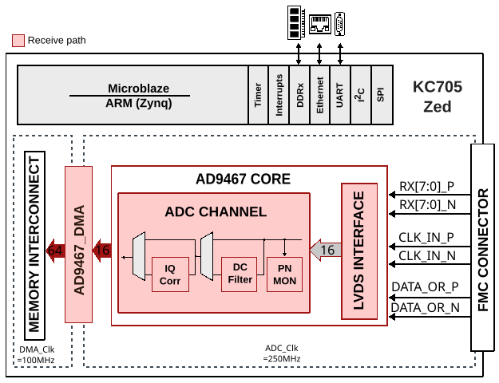
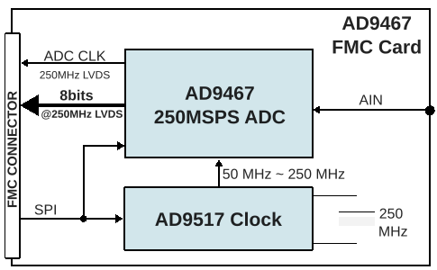

AD9467-FMC User Guide
Introduction
The AD9467 is a 16-bit, monolithic, IF sampling analog-to-digital converter (ADC) with a conversion rate of up to 250 MSPS. This reference design includes a data capture interface and the external DDR-DRAM interface for sample storage. It allows programming the device and monitoring its internal status registers. The board also provides other options to drive the clock and analog inputs of the ADC. This can be done by programming the AD9517-4 clock chip and/or setting up the ADL5565 differential amplifier respectively.
The LVDS interface captures and buffers data from the ADC. The DMA interface then transfers the samples to the external DDR-DRAM. The capture is initiated by software.

Features
Full featured evaluation board for the AD9467
SPI interface for setup and control
Uses 12 V supply; 3.3 V from the FMC connection
Internal and external reference options
VisualAnalog and SPI Controller software interfaces
Supported Devices
Supported Carriers
HDL Reference Design
Block Diagrams


Clock Selection
The AD9467-FMC-250EBZ board provides three possible clock paths for the AD9467:
- Default clock input:
The default clock path uses a transformer-coupled circuit with a high bandwidth 1:1 impedance ratio transformer (T201). The clock input (J201) is 50 Ohm terminated and AC-coupled for single-ended sine wave inputs.
- Crystal oscillator (Y200):
The board can be clocked from the on-board low phase noise 250 MHz oscillator (Vectron VCC6-QCD-250M000). To use this option, install C205 and C206, remove C202, and set jumper P200 to the On position.
- Clock generator (AD9517-4):
A differential LVPECL or LVDS clock can be generated using the on-board AD9517-4. Populate C304 and C305 (LVPECL) or C306 and C307 (LVDS) with 0.1 uF capacitors, and remove C209 and C210 to disconnect the default clock path.
Design Notes
The PN9/PN23 sequences used in the reference design are not compatible with O.150. They follow the same polynomial equations but only the MSB is inverted.
The AD9467 drives the interleaved first byte (D15:D1) on the rising edge and second byte (D14:D0) on the falling edge of the DCO clock. At certain frequencies, captured data may appear reversed. If this occurs, try setting the “capture select” bit (register 0x0A, bit 0).
HDL Source Code
Software Support
No-OS Project
Linux Device Driver
Device Trees
Evaluating the AD9467 (SDP-H1)
This section describes how to evaluate the AD9467-FMC-250EBZ board using the EVAL-SDP-CH1Z (SDP-H1) data capture board with VisualAnalog and SPIController software on a Windows PC.
Equipment Needed
AD9467 (AD9467-FMC-250EBZ) evaluation board
EVAL-SDP-CH1Z (SDP-H1) data capture board
Analog signal source and antialiasing filter
Sample clock source
12 V, 2.5 A switching power supply
USB 2.0 cable (Mini-B)
PC running Windows
Software Needed
Typical Measurement Setup

Figure 4 Evaluation board connection – AD9467-FMC-250EBZ (left) and SDP-H1 (right)
Configuring the Board
Before using the software for testing, configure the evaluation board as follows:
Connect the AD9467-FMC-250EBZ evaluation board to the SDP-H1 data capture board as shown in the figure above.
Connect one 12 V, 2.5 A switching power supply to the SDP-H1 board. Connect the Mini-B USB port of the SDP-H1 board to the PC with the supplied USB cable.
The SDP-H1 should appear in the Windows Device Manager. If it does not, unplug all USB devices, reinstall SPIController and VisualAnalog, and restart the hardware setup from step 1.
On the ADC evaluation board, provide a clean, low jitter 250 MHz clock source to connector J201 and set the amplitude to 16 dBm. This is the ADC sample clock.
On the ADC evaluation board, provide a clean, low jitter signal to connector J100. Use a shielded, RG-58, 50 Ohm coaxial cable. For best results, use a narrow-band band-pass filter with 50 Ohm terminations and an appropriate center frequency.
Note
When connecting the ADC clock and analog source, use clean signal generators with low phase noise, such as Rohde & Schwarz SMA or HP8644B signal generators or equivalent.
VisualAnalog Setup
Start VisualAnalog.
On the New Canvas window, select ADC > Single > AD9467 > FFT.
If VisualAnalog opens with a collapsed view, click the Expand Display icon.
Click the Settings button in the ADC Data Capture block.
On the General tab, set the clock frequency to 250 MHz (or the actual clock frequency being used).
Click on the Capture Board tab and browse to the
ad9467_sdp_h1.binfile. Click the Program button. The FPGA_DONE LED should illuminate on the SDP-H1 board.Click OK.
SPIController Setup
Start SPIController.
Select the
AD9467_16Bit_250MSspiR03.cfgfile if prompted.If necessary, click File > Cfg Open and load
AD9467_16Bit_250MSspiR03.cfg.To enable SPI communications, click Config > Controller Dialog and uncheck the SDO Active button.
Obtaining an FFT
Click the Run button in VisualAnalog. The captured data should appear similar to the figure below.
Adjust the amplitude of the input signal so that the fundamental is at the desired level (examine the Fund Power reading in the left panel of the FFT window). Usually about 16 dBm of signal power from the signal generator produces a -1 dBFS fundamental signal.
To save the FFT plot, click the Float Form button in the FFT window, then use File > Save Form As to save it.

AD9517-4 Configuration (Optional)
The AD9467-FMC-250EBZ is configured from the factory to use an external clock connected to J201. Alternatively, the board can be configured to use the on-board 250 MHz oscillator and AD9517-4 clock generator to produce the 250 MSPS clock input.
Hardware modifications:
Remove: R209, R210, C209, C210
Add: C205, C206, C300, C301, C304, C305
Set jumper P200 to the On position
Setup instructions:
Ensure that a clock source is not connected to J201.
Configure SPIController and VisualAnalog as described above.
Launch a second instance of SPIController.
Load the
AD9517spiR03.cfgconfiguration file.Click Config > Controller Dialog, select 2 under FIFO Chip Sel#, then click Apply and OK.
Click File > Macro Group Open and select the
configure_ad9517_AD9467-FMC-250EBZ.mgpfile.Check the Enable checkbox and click Run Macros.
Verify that LED CR300 is illuminated on the AD9467-FMC-250EBZ board.
Click the Run button in VisualAnalog to obtain an FFT.
Troubleshooting (SDP-H1)
FFT plot appears abnormal:
If a normal noise floor is visible when the signal generator is disconnected, the ADC may be overdriven. Reduce the input level.
In VisualAnalog, click Settings in the Input Formatter block and verify that Number Format is set to the correct encoding (offset binary by default).
FFT appears normal but performance is poor:
Verify that an appropriate band-pass filter is used on the analog input.
Verify that the signal generators for clock and analog input are clean (low phase noise).
If using non-coherent sampling, change the analog input frequency slightly, or use coherent frequencies.
Verify that the SPI configuration file matches the product being evaluated.
Ensure there is no extra stress or torque on the clock and analog input connectors.
FFT window remains blank after clicking Run:
Verify that the evaluation board is securely connected to the SDP-H1.
Verify that the FPGA has been programmed by checking that the FPGA_DONE LED is illuminated on the SDP-H1. If not, reprogram the FPGA through VisualAnalog. If the LED still does not illuminate, disconnect the USB and power cord for 15 seconds, reconnect, and repeat the setup process.
Verify the correct FPGA bin file was used.
Verify that the correct sample rate is configured in the ADC Data Capture block settings.
Ensure that the ADC has a valid clock input.
Evaluating the AD9467 (ZedBoard + Linux)
This section describes how to evaluate the AD9467-FMC-250EBZ board using a ZedBoard with ADI Kuiper Linux and the ACE Generic IIO plugin.
Equipment Needed
Software Needed
ACE Software with the ADGenericIIO plugin
Preparing the SD Card
Download the ADI Kuiper Linux image.
Verify the image integrity using a checksum tool such as WinMD5.
Format the SD card using SD Card Formatter if needed.
Flash the ADI Kuiper Linux image to the SD card using Win32DiskImager or a similar tool.
After flashing, copy the following files to the root directory (BOOT FAT32 partition) of the SD card:
target/zynq-zed-adv7511-ad9467-fmc-250ebz/BOOT.BINtarget/zynq-zed-adv7511-ad9467-fmc-250ebz/devicetree.dtbtarget/zynq-common/uImage
Safely eject the SD card.
Hardware Setup

Figure 6 AD9467-FMC-250EBZ (right) and ZedBoard (left) setup
On the ZedBoard, set the boot mode jumpers for SD card boot:
Jumper
Position
JP7
GND
JP8
GND
JP9
3V3
JP10
3V3
JP11
GND
Insert the SD card into the ZedBoard SD card slot (J12).
Connect the AD9467-FMC-250EBZ to the ZedBoard FMC connector (J1).
Connect the 12 V / 5 A power supply to the ZedBoard barrel jack (J20).
On the AD9467-FMC-250EBZ, provide a clean, low jitter 250 MHz clock source to connector J201 at 16 dBm.
Provide a clean analog input signal to connector J100. For best results, use a narrow-band band-pass filter with 50 Ohm terminations.
Connect a USB-A to Micro-USB-B cable from the PC to the ZedBoard USB-UART port (J14) for terminal access.
Turn on the power switch (SW8). The green Power LED (LD13) should illuminate, followed by the blue Done LED (LD12) after boot completes.
For device connectivity, either:
Connect another USB cable to USB-OTG port (J13), or
Connect a Gigabit Ethernet cable to port J11.
If using USB-OTG, open a terminal emulator (such as PuTTY) with the serial configuration: baud rate 115200, 8 data bits, 1 stop bit, no parity, no flow control. Then enable the USB-OTG port:
usb_otg.sh enable usb_otg.sh status reboot
ACE Software Setup
Install ACE Software if not already installed.
Open the Plug-In Manager in ACE and install the ADGenericIIO plugin from the Available Packages list.
Return to the ACE Home screen. The connected hardware should be detected automatically.
Click the detected hardware, then in the System tab uncheck Operate without Hardware and click Acquire.
Return to Home, click the detected hardware again, then click Find Devices. Select device cf-ad9467-core-lpc, click Get IIO Info, and click Go to Detected Chip.
Obtaining an FFT
Set the signal sources:
Clock input: 250 MHz at 16 dBm on J201
Analog input: desired frequency on J100
In ACE, set the Sampling Frequency to 250000000.
Verify SPI communication by reading register 0x00 under Direct Register Access (expected default value: 0x18).
Click Proceed to Analysis and set the sample frequency to 250 MHz.
Click FFT, then Run Once to perform a single capture. Adjust the analog input signal level until the fundamental power reaches approximately -1 dBFS.
To save results, click the Export button in the Results tab.

Figure 7 AD9467-FMC-250EBZ sample FFT capture using ACE on ZedBoard
More Information
Support
Analog Devices will provide limited online support for anyone using the reference design with Analog Devices components via the FPGA Reference Designs Forum.